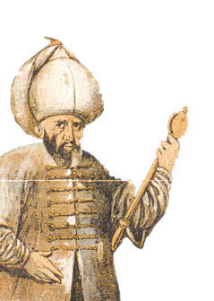
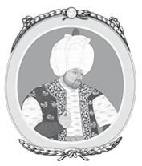
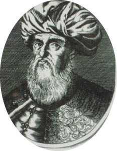
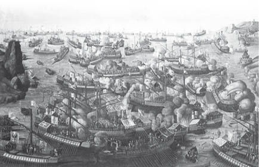

XI : SADRAZAM SOKULLU
1566-1578
Süleyman, tahtın babadan oğula geçmesi yöntemiyle üç yüzyıldan biraz az bir zaman içinde Osmanlı İmparatorluğu’nu sıfırdan dünyanın en büyük imparatorluklarından biri haline getiren ilk on Osmanlı sultanının en sonuncusu ve en yücesidir. Hükümdarlıkları, ortalama ömürden bile uzun olarak, aşağı yukarı yirmi sekiz yıl sürmüş olan bu sultanlar belli ki, çok kudretli bir milletten gelmektedir. Tek bir istisna dışında hepsi hünerli birer asker olmuş ve ordularını savaş alanlarında komuta etmiştir. Ayrıca, kendi hedeflerine ulaşma konusunda azimli olan birer devlet adamlarıdır. Bu padişahların çoğu edebiyat aşığı, tarih öğrencisi olmuş ve hatta şair kimliği dahi kazanmışlardır. Bütün bu iyi özelliklerine rağmen, neredeyse hepsinin acımasız birer yanı da olmuştur. Dünya tarihinde başka bir hanedanın bu denli seçkin ve kararlı niteliklerle dolu bir hükümdarlar topluluğuna sahip olup olmadığı bilinmemektedir.

Süleyman’a, kendisini tanımlamaya yeterli olan “Ayyaş” lakabıyla da tanınan üçüncü oğlu Selim haleflik etmiştir. Selim, Süleyman’ın öldürülmemiş olan tek oğludur. Selim’e, Osmanlı hanedanının çöküşüne kadar yirmi dört padişah haleflik etmiştir. Nadir istisnalar dışında bu padişahların hepsi büyük bir imparatorluğu yönetmek isteyen azimli insanlardır. Fakat aralarından yalnızca bir tanesi ordularını savaş alanında komuta etme yetisine sahip olmuştur. Diğerlerinin ise ne isteği ne de yeteneği ve hatta cesareti vardır. Bu padişahlar, ya vezirlerinin ve cariyelerinin ya da harem ağalarının etkisinde kalmışlardır.
Osmanlı tarihinin ilk on sultanının kararlılığı ve erdemli nitelikleri ne kadar takdire şayan ise Süleyman’dan sonra imparatorluğun çöküşüne dek tahta çıkan padişahların bu niteliklerden tamamen yoksun olması da o kadar dikkat çekicidir. İnsan, Osmanlı ırkının asil kanının yozlaşmış bu yirmi beş sultanın damarlarında gerçekten dolaşıp dolaşmadığını ister istemez merak etmektedir. Von Hammer, kitabında, kendi fikrini açıkça beyan etmese de Sultan Selim’in aslında Süleyman’ın değil bir Yahudi’nin oğlu olduğuna ve bu durumun Selim’in zayıf aklı üzerinde kuvvetli bir etkisi olan Yahudi bir macerapereste olan aşırı sevgisinin açıklaması olabileceğine dair zamanında İstanbul’da yaygın olan bir söylentiye değinmiştir. Hareme hadım edilmiş olan erkekler dışında hiçbir erkeğin giremeyeceğine dair alınmış bir önlem olsa da böyle bir durum haremin tehlikeli ortamında gerçekleşmiş olabilir.

İzahatı ne olursa olsun, Osmanlı hanedanının yozlaşmasının Selim’in tahta çıkışından sonra gerçekleştiğine dair bir kuşku olamaz. Fakat bu durum, imparatorluğun ani çöküşü anlamına gelmemektedir. Osmanlı İmparatorluğu, her bir nesilde yalnızca bir hükümdarın enerjisi ve yetenekleriyle kurulmuş olamaz. Her dönemde, hükümdarlarına katkı sağlamış olan kabiliyetli kişiler, devlet adamları, komutanlar ve her rütbeden yöneticiler olmuş olmalıdır. Süleyman’ın ölümünden sonra böyle kabiliyetli onlarca insan yaşamış ve devleti tehdit eden yıkımdan korumuştur. Aslında imparatorluk toprak bakımından hemen küçülmeye başlamamış, aksine tarihteki güçlü sultanların imparatorluğa kazandırdıkları ivmeyle birlikte on iki yıl boyunca genişlemeye devam etmiştir. Selim, bu yeni türdeki sultanların ilkidir. Devlet işlerine ilgi duymamış ve bu işlerde rol almamıştır. Hovarda ve sarhoş olarak tanınmıştır. Yüksek veya düşük kademeden herkese kötü örnek olmuş ve kadılarla ulemalar da içki içmeye başlamıştır. Şairler, şarapla ilgili coşkulu şiirler yazmıştır. Bu şairlerden biri, şarabın genç bir kadının buselerinden daha tatlı olduğunu yazmıştır. Bunun üzerine, Kur’an’ın emirlerine aykırı olduğu gerekçesiyle, şeyhülislamın şiiri denetlemesi istenmiştir. Fakat şeyhülislamın cevabı, “Bir padişah içki içmeye başladığında, halkının da aynını yapması ve şairlerin de bunu kaleme alması caizdir” demiştir.
Selim, Süleyman’ın egemenliğinde de iki yıl boyunca sadrazamlık yapmış olan sadrazamı Sokullu’nun çok fazla etkisinde kalmıştır. Oldukça yetenekli bir insan olan Sokullu bu dönemde aslında imparatorluğun gerçek hükümdarı olmuştur. Sokullu, engin fikirlere sahip bir insandır. Aklında iki tane önemli ve ilginç plan vardır. İlki, Türk donanmasının Kızıl Deniz ve Hint Okyanusu’na geçişini sağlamak için Süveyş Kanalı’nın açılması, diğeri ise Don ve Volga Nehirleri arasına bir kanal inşa ettirerek bu iki nehrin birleştirilmesidir. Kaynakları Rusya’da bulunan bu iki büyük nehir, uzun bir mesafe boyunca paralel akar ve bir noktada birbirlerine aralarında 30 mil mesafe kalacak şekilde yaklaşır. Bu noktadan sonra, biri Azak diğeri ise Hazar Denizi’ne dökülmek üzere tekrar ayrılır. Aralarındaki mesafenin en az olduğu noktaya kanal inşa ettirerek bu iki nehrin birleştirilmesi, Türk donanmasının önce Don Nehri’ne daha sonra buradaki kanalı geçerek Hazar Denizi’nden Volga’ya ulaşmasına ve böylece büyük bir avantaj sağlayarak İran’ın Tebriz kentine saldırmasına imkân sağlayacaktır. Bu iki büyük suyolunun birleştirilmesinin ticarî fırsatları da aşikârdır. Bu plan, son yıllarda varlığını ve gücünü büyük ölçüde genişletmiş olan Rusya’dan Astrakan ve diğer toprakların alınmasını gerekli kılmıştır.
Sokullu bu amaçla, 1568 yılında, yirmi beş bin Yeniçeri ve Sipahi’den oluşan ordusunu Azak Denizi’ne göndermiştir. Bu ordu, Azak Denizi’nde Kırım’dan gelen otuz bin Tatar tarafından desteklenmiş ve bu birleşik kuvvet Volga kıyısından Astrakan’a ulaşmıştır. Osmanlılar, böylece, tarihte ilk defa Ruslarla doğrudan çatışma içine girmiştir. Sefer, tamamen başarısızlıkla sonuçlanmıştır. Türkler, Astrakan’ı ele geçirememiş ve Rus ordusu da Tatar ordusunu tamamen yok etmiştir. Türklerin esas ordusu ise Azak Denizi’ne çekilmek zorunda kalmıştır. Daha sonra, bu ordunun daha da büyük bir kısmı Karadeniz’deki şiddetli bir fırtınada hayatını kaybetmiş ve İstanbul’a yalnızca yedi bin asker dönebilmiştir. Dolayısıyla, Don-Volga kanal projesi suya düşmüştür. Süveyş Kanalına bir kanal inşa edilmesi projesi ise Yemen’de bir ayaklanmanın çıkması ve buraya Sinan Paşa komutasında bir birlik gönderilmesi gerekliliğinden dolayı süresiz olarak ertelenmiştir. Bu birlik, başarıyı yakalamış ve böylece Yemen ile Arabistan’ın diğer bölgeleri tamamen ve nihayetinde Osmanlı İmparatorluğu’nun boyunduruğu altına girmiştir.
Yemen’in ikinci kez fethedilmesinin üzerine Sokullu, İmparator V. Charles’ın ele geçirdiği tarihten beri İspanyolların egemenliğinde olan Tunus’a taarruzda bulunmaya karar vermiştir. Bu amaçla, başarılı bir korsanlık yaşamından sonra sultanın hizmetine alınmış olan İtalyan asıllı Oruç Paşa komutasında bir donanma gönderilmiştir. Oruç Paşa, 1568 yılında Cezayir valiliğine atanmış ve ertesi yıl Tunus seferini komuta etmiştir. İspanyolları bozguna uğratmış ve şehri işgal etmiştir. Fakat şehri koruyan İspanyol müdafaa güçleri, 1574 yılına kadar ellerinde tuttukları iç kaleye çekilmiştir.
1570 yılında başka bir sefer planı yapılmış ve o tarihte Venedik Cumhuriyeti’nin egemenliğinde olan Kıbrıs adasının alınması amaçlanmıştır. Bu plana karşı çıkan ilk kişi Sokullu olmuştur. Fakat Sultan Selim ilk ve son kez nâzırının görüşlerini dikkate almamıştır. Selim, Kıbrıs şarabını sevdiği için kendisine bir kaynak sağlamak niyetini taşımıştır. Ayrıca, bir eğlence sırasında sarhoşken yakın arkadaşı Yahudi’yi Kıbrıs kralı yapacağına dair vaatlerde bulunmuştur. O zamana dek Sokullu’ya tam destek veren şeyhülislama Kıbrıs’a yapılacak olan bir saldırının Venedik ile yapılmış olan anlaşmadan dolayı sultanı bağlayıcı nitelikte olup olmadığı konusunda danışılmıştır. Şeyhülislam, Kıbrıs’ın bir zamanlar Mısır’ın sömürgesi olarak Müslümanların egemenliğinde olduğu için kâfir güçler tarafından alınan bu toprakları tekrar İslam toprağı haline getirme fırsatından yararlanmanın Müslüman bir şehzadenin görevi olduğuna ve sonuç olarak Venedik ile yapılan anlaşmanın sultan üzerinde bağlayıcılığı bulunmadığına dair bir fetva vermiştir.
Şeyhülislamın bu fetvası gereğince, Sokullu’nun rakibi olan Kara Mustafa komutasında, düzensiz birlikler de dâhil olmak üzere, yüz bin askerden oluşan bir ordu ve Piyale Paşa komutasında bir donanma 1570 yılında sefere çıkmıştır. Birlikler, bir yılın içindeki günler kadar çok kiliseye sahip olduğu söylenen ve gelişmekte olan bir Hıristiyan şehri başkent Lefkoşa’yı kuşatma altına almıştır. Yedi haftalık bir kuşatmadan sonra, taarruzlar sayesinde şehir alınmış ve Türk askerlerine yağmalanması için bırakılmıştır. Birçok kadın, gözü dönmüş bu askerlerin eline düşmektense kendisini ve çocuklarını öldürmüştür. İki bin bakımlı ve güzel görünen kız ve erkek çocuğu köle olarak satılmıştır.

Kara Mustafa Paşa
Mustafa Paşa, daha sonra adanın en önemli kalesi olan Gazimagusa’yı işgal etmiştir. Kale, Venedikli cesur bir kumandan olan Bragadino komutanlığında İtalyan ve Rum askerleri tarafından kahramanca savunulmuştur. 1570 yılının kış mevsimi boyunca bu birlik saldırılara direnmiştir. Ertesi yılın (1571) Ağustos ayına kadar, asker sayıları dört bine kadar düşmüş olan birlik, yiyecek ve cephane yetersizliğinden dolayı teslim olmak zorunda kalmıştır. Mustafa, bu askerlere oldukça olumlu şartlar sunmuştur. Askerlerin hayatları bağışlanmış ve vatandaşların varlıkları ve inançları bu askerlerin emniyetine bırakılmıştır. Askerlerin Türk gemileriyle Girit’e götürülmeleri ve orada serbest bırakılmaları vaadinde bulunulmuştur. Bu şartların uygulanması esnasında, tutsaklar Kırım’a gitmeye hazır olan gemiye alınmıştır. Bu aşamada, Kara Mustafa ile Bragadino ve yirmi askeri arasında hararetli sözlerin kullanıldığı bir görüşme yapılmıştır. Türk komutan, kuşatma sırasında tutsak olarak alınan bazı askerlerinin öldürüldüğünden şikâyet etmiş, Bragadino ise bu durumu reddetmiştir. Kara Mustafa, Bragadino’nun üslubunu küstah bulmuş ve Baragadino’nun heyetinin kendi gözleri önünde öldürülmesini emretmiştir. Bragadino ise daha da kötü bir son için öldürülmemiştir. Gemi güvertesine alınan askerler tekrar indirilmiş ve toplu olarak öldürülmüştür. Bir hafta boyunca büyük acımasızlıklar ve insan dışı hareketlere maruz kalan Bragadino’nun derisi canlı canlı yüzülmüştür. Derisinin içi otlarla doldurulmuş ve Türk askerlerinin ibret alması için sergilenmiştir. Gazimagusa’nın alınmasıyla Kıbrıs’ın fethi tamamlanmıştır. Lord Beaconsfield tarafından hazırlanan bir politika gereğince 1878 yılında Britanya Hükumeti’ne devredilene kadar da Osmanlıların egemenliğinde kalmıştır. Adanın ele geçirilmesinde Türklerin elli bin askerini kaybettiği ve bunun da Kara Mustafa’nın yapmış olduğu zalimliklerin faturası olduğu söylenmektedir.
Bu esnada, Kıbrıs’ın kaybedilmesi ve burada yaşanan acımasızlıklardan dolayı Hıristiyan güçleri alarma geçmiştir. 1570 yılında, Osmanlıların Akdeniz’de artmakta olan güçlerini engellemek amacıyla özellikle Papa’nın isteği üzerine İspanya ve Venedik güçleriyle bir ittifak oluşturulmuştur. Bu güçler tarafından çok büyük bir donanma hazırlanmış ve müteveffa İmparator V. Charles’ın oğlu, yetkinliğini İspanya’nın Endülüslerden arındırılmasıyla ispat etmiş ve genç yaşına rağmen zamanının en iyi generallerinden biri gözüyle bakılan, yirmi dört yaşındaki Don John’un komutasına verilmiştir. Donanma, iki yüz gemiyle altı adet güçlü ve büyük savaş gemisi ve silahlardan oluşmaktadır. Gemilerde seksen bin asker ile kürekçi görev almış, bu sayının yarısını İspanyollar, üçte birini Venedikliler ve kalanını Papa’nın askerleri oluşturmuştur. Don John, en üst rütbeli komutandır. İspanyol birlikler, II. Philip zamanında Hollanda’da adı çıkmış; fakat daha sonra İngiltere’nin işgali için İspanya’da toplanan deniz kuvvetlerinin başına geçmiş olan Parma prensinin komutasına verilmiştir.
Donanma, Kıbrıs için artık çok geç bir tarih olan 21 Eylül 1571 gününde Messina’da toplanmıştır. Türkler ise iki yüz doksan gemi ve yüz yirmi bin asker ile kürekçiden oluşan çok daha kuvvetli bir donanmayla İnebahtı Körfezi’nde toplanmıştır. Fakat Osmanlıların, İspanyolların sahip olduğu güçlü silahları olan büyük savaş gemileriyle kıyaslanırsa bu tarz büyük gemileri yoktur. Osmanlı donanması, deniz muharebelerinde tecrübesi olmayan genç Kaptan-ı Derya Ali Paşa tarafından yönetilmiştir. İkinci komutan Uluç Paşa’dır. Pertev Paşa ise ordunun komutanlığını gerçekleştirmiştir. Pertev ve Uluç Paşalar, askerlerinin yeterince eğitimli olmadığını belirterek müttefik kuvvetlerle hemen savaşa girilmesine karşı çıkmıştır. Bunun üzerine, savaş divanında hararetli bir tartışma yaşanmıştır. Ali Paşa derhal saldırılmasından yanadır. Uluç Paşa tartışmayı bölerek şunları dile getirmiştir: “Sessizlik! Hazırım, çünkü bir kaptan-ı deryanın toyluğunun benim kırk üç yıllık savaş deneyimimden ağır bastığı yazıyor burada. Fakat düşmanlar seninle dalga geçecek! Tehlike yaklaştığında bu sözlerimi hatırla.”
Her iki donanmanın kürekçileri de kayıklara zincirlenmiş olan kölelerdir. Osmanlı donanmasında, savaşta tutsak olarak alınmış Hıristiyanlar bulunmaktadır. Hıristiyan donanmasında ise hapishanelerden toplanmış mahkûmlar kürek çekmektedir. Her iki donanmada da komutanlar ufukta görünen savaşta görevlerini yerine getirmeleri halinde bu kölelere özgürlüklerine kavuşacaklarına dair söz vermiştir.
İki donanma, 7 Ekim 1571 tarihinde İnebahtı kanalında karşı karşıya gelmiştir. Hıristiyan donanması, Venedikler sol kanatta olmak üzere hilal şekline girmiştir. Altı güçlü savaş gemisi, diğer gemilerin önünde tabya görevini almıştır. Don John, hilal şeklinin en ortasında bulunmaktadır. İki donanma birbirine yaklaşmaya başlamış ve çarpışma başlamıştır. Düşmanlar yaklaştıkça, güçlü silahlarıyla ateş açan İspanyol savaş gemileri tarafından Türk gemilerinin savaş hatları kırılmıştır. Sultana adlı gemide bulunan Osmanlı kaptan-ı deryası, Don John’un içinde bulunduğu Real adlı gemiye doğrudan saldırmış ve ikinci bir gemiden de destek almıştır. Bu üç gemi birbirine girmiş ve İspanyol askerler Osmanlı güvertelerine geçmiştir. Yumruk yumruğa bir mücadele başlamış ve Osmanlı kaptan-ı deryası öldürülmüştür. Don John tarafından tasvip edilmese de kellesi uçurulmuş ve İspanyol gemisinin direğine asılmıştır. Bu olay, Osmanlı donanmasının cesaretinin kırılmasına neden olmuştur. Savaş hattı boyunca, Türk gemileri düşmanlarıyla yaptıkları mücadelelerde yenilgiye uğramıştır. Merkez ve sol kanatları tamamen bozguna uğramıştır. Sağ kanadın başında olan Uluç Paşa ise daha şanslıdır. Kendi hattına saldıran Venedik gemileri üzerinde üstünlük sağlamayı başarmıştır. Müttefik birliklerden ayrılmış olan on beş gemiye şiddetli bir saldırı gerçekleştirmiş ve tamamını batırmayı başarmıştır. Osmanlıların ana donanmasının İspanyollar tarafından tamamen bozguna uğratıldığını öğrendiğinde, kendi hattından kırk adet gemiyle saldırıya geçmiş ve aralarından sıyrılmayı başarmıştır. Bu istisna dışında, bütün Türk kadırgaları, toplamda iki yüz altmış altı adet kadırga, ele geçirilmiş veya batırılmıştır. Bu büyük savaşta elli bin Türk yaşamını kaybetmiş ve on beş bin Hıristiyan köle özgürlüğüne kavuşmuştur.

İnebahtı Deniz Savaşı
Bu savaş, Osmanlılar için çok büyük bir bozgun olmuştur. Neredeyse aynı noktada gerçekleşen, Marc Anthony’nin donanmasının Octavius tarafından harap edildiği (M.Ö 31) Aktium Savaşı’ndan beri, Akdeniz böyle bir deniz muharebesine sahne olmamıştır. Ayrıca, Nelson’un Mısır kıyıları açıklarında Fransız donanmasının tamamını ele geçirdiği veya batırdığı Nil Muharebesi’ne kadar Akdeniz suları bu denli mutlak bir çatışma daha yaşamamıştır.
Müttefik Hıristiyan donanmasın bu zaferini bazı Osmanlı topraklarına saldırarak taçlandırması beklenmiştir. Fakat böyle bir plan ne komutanlar ne de amiraller tarafından yapılmıştır. Donanma, galibiyetinden sonra dağılmıştır. Her bir bölük zafer tezahüratlarını karşılamak üzere kendi limanına dönmüştür. Heykeltıraşlar ve ressamlar, Roma, Venedik Messina ve diğer şehirlerdeki kiliseler için eserler yaparak bu galibiyeti kutlamıştır. Bu denli mutlak bir galibiyetin bu kadar kısır sonuçlara sahne olduğu ise daha önce görülmemiştir.
Bozguna uğramış olan Osmanlılarla, galiplerin tutumları dikkat çekicidir. Uluç Paşa, Ege Denizi’nde kırk adet sahipsiz gemiyi alarak toplam seksen gemiyle İstanbul’a dönmüştür. Burada, Piyale Paşa da birkaç gemiyle Uluç Paşa’ya katılmıştır. Sokullu ve diğer devlet adamları, donanmayı yenilemek için ellerinden gelenin en iyisini yapmıştır. Sultan Selim bile bu çabalara ortak olmuştur. Hükümdarlık hazinesinden donanmaya oldukça büyük bir katkıda bulunmuştur. Harem bahçesinin bir kısmını yeni gemilerin inşasına ayırmıştır. Daha büyük boyutlardaki seksen savaş gemisiyle yüz altmış adet kadırganın inşasına başlanmıştır. Ertesi yılın bahar mevsiminde, gemilerin yapımı tamamlanmıştır. İnebahtı’daki kayıplar yerine getirilmiş ve Osmanlı donanması bu felaketten önceki gücüne kavuşmuştur. 1572 yılının yazında, müttefik Hıristiyan donanması Akdeniz’in batısında tekrar bir araya gelmiştir. Sayıları hala Osmanlı donanmasından azdır. İki donanma yaz mevsiminde önce Çuha Adası yakınlarında daha sonra da Cape Matapan’da karşı karşıya gelmiş; fakat çatışma başlamamıştır. Bu durumun nedeni, Kılıç Ali unvanıyla Türk donanmasının kaptan-deryalığına getirilen Uluç Paşa’nın, mürettebatın yeterince eğitilmeden önce donanmasını riske atmamayı daha akıllıca bulmuş olması olabilir. Uluç geri çekilmiş ve bu durumun sonucu, kararının ne kadar yerinde olduğunu göstermiştir. Müttefik donanma ise herhangi bir müdahalede bulunamamıştır.
1573 yılında Venedikliler, Osmanlılarla barışın sağlanması için koşulların görüşülmesinin yerinde olduğunu düşünmüştür. En son savaş sırasında İstanbul’da bulunan elçileri bu amaçla Sokullu ile görüşmüştür. Karşı iki kuvvetin yaşadığı, birinin Kıbrıs adasını diğerinin ise donanmasını kaybettiği zayiata değindiğinde, Sokullu gururla şunları söylemiştir:
Donanmamızın başına gelenlerden sonra cesaretimizin şüphesiz farkındasınız. Bizim kaybettiğimiz şey ile sizin kaybettiklerinizin arasında büyük bir fark var. Siz donanmamızı yok ederken sadece sakalımızı kestiniz, biz ise bir krallığı ele geçirerek sizin kolunuzu kestik. Kesilen kol bir daha çıkmaz; fakat kesilen sakal daha da güçlü bir şekilde yerine gelir.
Barış koşulları üzerinde mutabakata varılmıştır. Kıbrıs’ın alımı, yalnızca adanın resmen devriyle değil ayrıca Venedik Cumhuriyeti’nin, adanın alınmasında Osmanlıların tahminen 300.000 altın olan kaybını ödemeyi kabul etmesiyle de doğrulanmıştır. Venediklilerin Zante adası için ödediği vergi 500 altından 1500 altına çıkarılmıştır. Venedik Cumhuriyeti, Kıbrıs adasına yıllık olarak ödediği 8000 altınlık vergiden de kurtulmuştur. İki kuvvetin, Dalmaçya ve Arnavutluk’taki mülkiyetlerinin sınırları ise savaştan önceki hallerine döndürülmüştür. Barış koşulları Venedikliler açısından küçük düşürücü olmuştur; İnebahtı Savaşı gerçekleşmemiş olsaydı Venedikliler dahi daha kötü bir durumda olamazlardı.
Donanmasının hızlı bir şekilde eski haline dönmesi, Osmanlıların büyük gücünün ve emsalsiz zenginliğinin kanıtı olmuştur. Berberî asıllı tebaasının korsan birlikleri tarafından desteklenen Osmanlı donanması uzun bir zaman boyunca Akdeniz’de üstünlüğünü korumuştur.
Venedik ile Osmanlılar arasında barış sağlandıktan sonra, İspanyol donanmasının başına geçen Don John 1573 yılının Ekim ayında, önceki sayfalarda bahsedildiği gibi, Osmanlılar adına Uluç Paşa tarafından alınmış olan Tunus’a sefere çıkmıştır. Türkler, hâlâ İspanyol askerlerinin elinde bulunan iç kaleyi ele geçiremediği için Don John’un görevi daha kolaydır. Don John, Tunus’u ellerinde tutan birkaç adet Türk’ü bozguna uğratmada zorluk çekmemiştir. Ayrıca, Sultan Hamid’i tekrar tahta çıkarmak gibi bir niyeti olmamıştır. Zavallı sultan, Tunus’a gelmiş ve tekrar tahta çıkmak istemiştir. Fakat İspanyolların artık onunla işleri kalmamıştır. Bunun üzerine, eski sultan, Napoli’ye gönderilmiştir.
Amacına ulaşmış olan Don John, sekiz bin İtalyan ile İspanyol’dan oluşan karma bir birliği Tunus’ta bırakarak İspanya’ya dönmüştür. Bu haber İstanbul’a vardığında Sokullu ve Uluç çileden çıkmıştır. 1574 yılında, Uluç Paşa komutası altında İspanyol ve İtalyan birliğini bir hamlede alt eden iki yüz altmış kadırga ve büyük savaş gemisinde oluşan bir donanma ile kırk bin askeri Tunus’a ulaşmış, vilayeti ele geçirmiş ve nihayetinde Osmanlı İmparatorluğu’nun topraklarına katmıştır. Bu başarı, Venedik, İspanya ile müttefik olarak kalmaya devam etmiş olsaydı belki gerçekleşemezdi; fakat İspanya tek başına Akdeniz’de Osmanlılarla karşılaşacak durumda değildir.
1574 yılında Selim içkinin etkisi altında vefat etmiş ve yerine devlet işlerinde babası kadar işe yaramaz olan oğlu III. Murad geçmiştir. Sultan’ın haremindeki entrikalar sayesinde gücünü yavaş yavaş kaybeden ve sonu gelen Sokullu, dört yıl sonra bir suikastçı tarafından öldürülene kadar sadrazam olarak kalmıştır.
Sokullu’nun vezirliğinin son yılı olan 1578 senesinde yine İran’la savaş patlak vermiş ve Kıbrıs’ın fatihi Mustafa’nın komutası altında Asya’ya büyük bir ordu gönderilmiştir. Savaş, o tarihte boyunduruk altında olmasa da İran ile yakın ilişkileri bulunan bir Hıristiyan prensinin egemenliğindeki Gürcistan’ın işgaliyle başlamıştır. Mustafa, Gürcistan ile İran’a komşu vilayetler olan Azerbaycan, Luristan ve Scherhezol’u alma konusunda hiçbir sıkıntı yaşamamıştır. Hazar’da Dağıstan’a girmiştir. Savaş, Sokullu’nun halefleri zamanında değişkenlik göstererek de olsa birkaç yıl boyunca devam etmiştir. 1570 yılında, İranlılarla, bu vilayetlerin Osmanlı İmparatorluğu’na bırakıldığına dair bir barış anlaşması imzalanmıştır.
Bu kısa anlatılardan görüleceği üzere, Vezir-i Azam Sokullu’nun Osmanlı’nın asıl hükümdarı olduğu on iki yıl boyunca Osmanlı İmparatorluğu’nun edindiği yeni topraklar çok büyük ve önemli olmuştur. Bu topraklar arasında Kıbrıs Adası, Tunus vilayeti, Gürcistan Krallığı, İran’dan alınan vilayetler ve Arabistan’da Yemen bulunmaktadır. Tek bir istisna hariç, bu topraklar Osmanlıların aldığı son topraklar olmuştur. Bu istisna, altmış yedi yıl boyunca yani 1645 senesine kadar Türklerin taarruzuna uğramamış ve 1668 yılına kadar da fethedilememiş olan Girit Adası’dır. Fakat bu tarihte, Osmanlı İmparatorluğu diğer bölgelerde düşmanlarının ellerinde küçülmeye başlamıştır. Buna göre, Süleyman’ın hükümdarlığının son yılı değil Sokullu’nun vezirliğinin son yılı olan 1578 senesi Osmanlı İmparatorluğu’nun zirvesi olmuştur.
İmparatorluk, bu döneme kadar, kuzeyde Macaristan’dan güneyde İran Körfezi ve Sudan’a, doğuda Hazar Denizi ve İran sınırlarından batıda Afrika’da Oran vilayetine kadar genişlemiştir. Akdeniz’de Fas hariç neredeyse bütün güney kıyılarına, Karadeniz ve Kızıl Deniz’de ise bütün kıyılara sahip olmuştur. Ege Denizi’nde Girit hariç bütün adalar Osmanlılara ait olmuştur. Bu topraklarda yirmi farklı millet yaşamıştır. Toplam nüfusları, otuz milyon ve üstü olarak tahmin edilmektedir. Bu dönemde, Anadolu’da bulunan birçok Rum şehri de Türkler tarafından ele geçirildiği sırada büyük kayıplar yaşamış olsa da hâlâ yoğun nüfusa sahiptir. Anadolu, Suriye ve Mezopotamya nüfusunun oldukça yoğun olduğu söylenebilir. Türk egemenliğinden kurtulmadan önce, Bulgaristan, Yunanistan ve Makedonya’nın nüfusu da oldukça yoğun olmuştur. Sokullu’nun ölümünün ardından, kötü yönetim ve yolsuzluğun imparatorluğu harap ettiği bir dönem baş göstermiş ve geçmiş üç yüzyıldaki büyümenin tam aksine gelecekteki üç yüzyıl boyunca toprakların kaybedildiği bir süreç başlamıştır.
Şunu da belirtmek gerekir ki, padişahlar kelimenin tam anlamıyla otokrat olsa da yaptıkları uygunsuz davranışlar üzerinde, uygulamada, nihai bir kontrol bulunmaktadır. Kutsal İslam hukukunun esas yorumcusu olan şeyhülislamın, sultanın bir davranışının veya başkaları tarafından önerilen bir davranışın İslam’a uygun olup olmadığını söyleme hakkı ve gücü vardır. Şeyhülislam, sultan tarafından görevden alınıp öldürülebileceği için bu güç nadiren kullanılmıştır. Fakat Yeniçeri isyanları baş gösterip sultanın tahttan inmesini talep edebilecek bir noktaya geldiğinde bir kural olarak şeyhülislama fikri sorulmuştur. Süleyman’dan sonra tahta çıkmış olan yirmi beş padişahın on birinin tahttan indirildiği ve neredeyse her seferinde şeyhülislamın kendi kanunî yaptırımını uyguladığı ilerleyen sayfalarda görülecektir. Yeniçeriler kanun tanımaz olsa da sultanların üzerinde yararlı bir kontrol mekanizması olmuşlardır. Tahttan indirme vakaları, yalnızca bir istisna hariç, yerinde olmuştur. Ayrıca, dört vezir ile birçok askerî, sivil, hukukî ve dinî görevlilerden oluşan dîvânın da sultanların üzerinde kontrol gücüne sahip olduğu söylenmelidir. Dîvân, haftada bir veya iki kez toplanıp devlet meselelerini görüşürdü. Süleyman’ın zamanına kadar dîvâna padişah başkanlık etmiş; fakat Süleyman bu geleneği sürdürmemiştir. Yozlaşmış sultanların zamanında dîvân önemli bir rol oynamıştır.